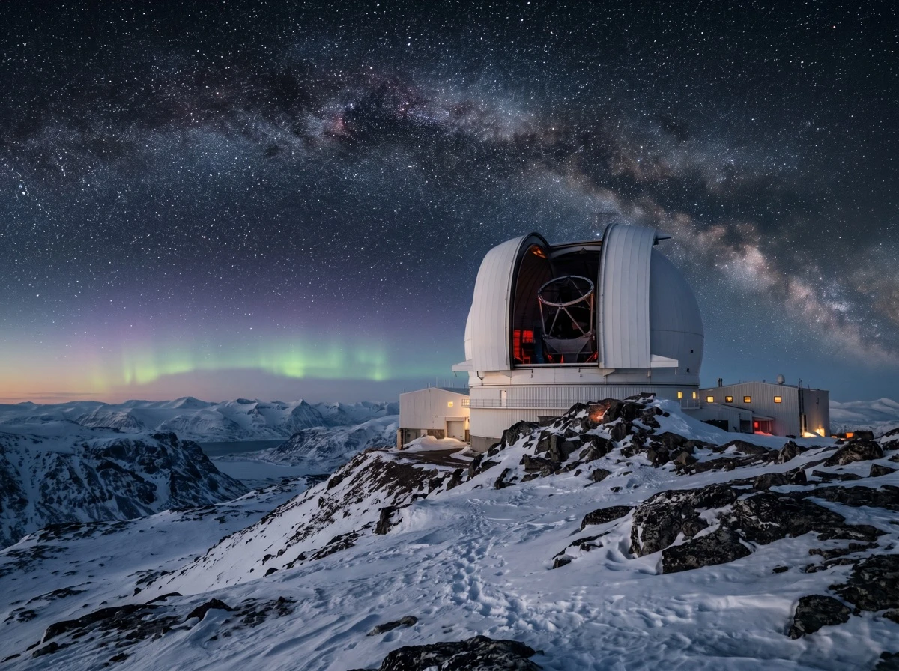
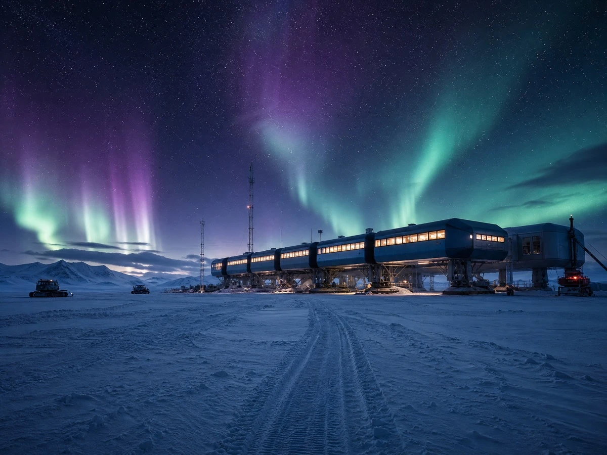

Field report · Atmospheric observation
A season under the polar night
What four months of darkness taught us about keeping optics sharp, calibrated, and trustworthy at −30 °C.
Sigrid Halvorsen
Field Lead, Auroalis · April 2026 · 8 min read

The polar night does not arrive all at once. It thins the day a little further each week until, sometime in late November, the sun gives up entirely and the sky settles into a long blue dusk that never quite becomes morning. For an observation studio, this is not a hardship to endure — it is the working season. The instruments that sat patient through the bright months finally have something to look at.
This is a short account of one such season: what we set out to measure, what the cold did to our plans, and the small disciplines that kept four months of data clean enough to be worth keeping.
Calibration is a habit, not an event
The single most expensive mistake in field observation is assuming a sensor reads the same in March as it did in October. It does not. Cold contracts every mount; frost creeps into every seam; a coefficient you trusted in the lab drifts by a few percent the first night the temperature drops below −25 °C. So we calibrate on a schedule, not on suspicion — every instrument, every week, logged and committed so the next observer can see exactly which value moved and when.
The discipline sounds tedious because it is. But it is also the only reason a partner can take our numbers and build a five-year study on top of them without re-deriving everything from scratch. Trust, in this work, is just calibration someone else can audit.
“They left us with cleaner data than we’d had in five years — and a written protocol the next observer could actually follow.”
Build for the worst night, not the average one
Every interface we deploy is tested at −30 °C, through a frosted lens, with gloved fingers, in the dark — because that is the night that matters. The aurora does not wait for good conditions, and neither does a sensor that has just lost calibration at 3 AM. Tooling that only works in the lab is tooling that fails exactly when the observation is rare enough to be worth having.

By the time the first thin line of sun returned in late January, we had a season of observations queued locally, synced upstream, and a protocol revised by the people who actually held the instruments. That document — more than any single measurement — is what we are proudest of. The night will come back next year. The next observer will be ready for it.
This is placeholder content for a website template — an example of an article or report page that matches the homepage design. Replace the copy and imagery with your own.